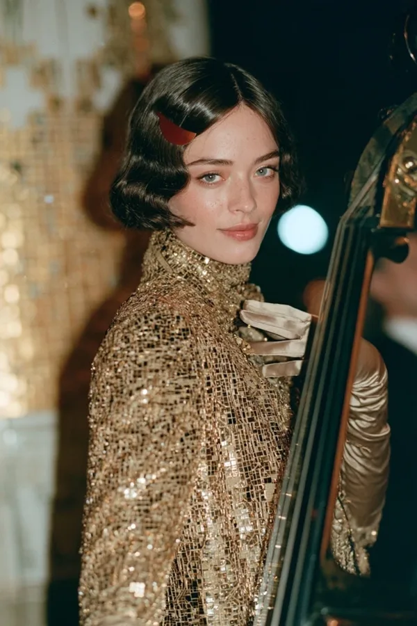
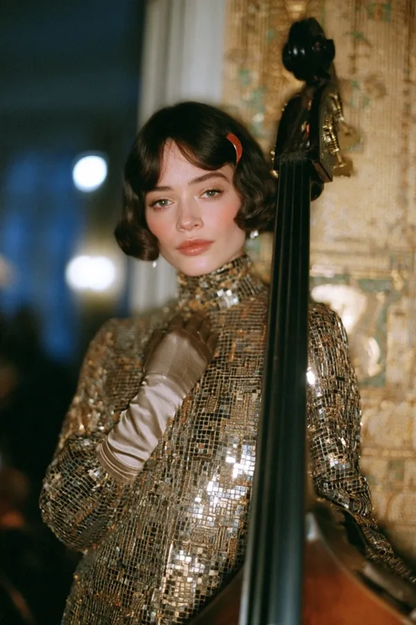
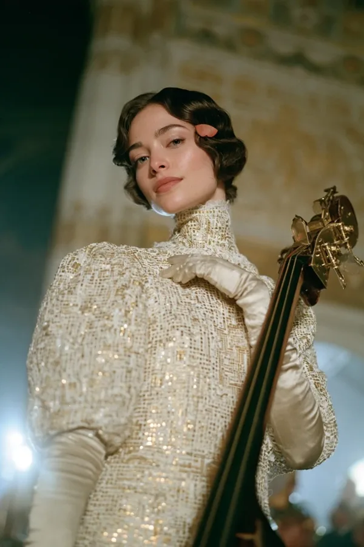

real name
Emilia Brandstätter
role
double bass
archetype
the artist
decade
1910
born
2007, Vienna-Hietzing
principle
Die Zukunft ist mir wurscht. Heute Abend soll man sich merken.



Essence
A young classical bassist from the first generation raised by AI. She stopped asking it things the night she cried at a string quartet and her tutor explained why: correct, and not it. She owns no technology, not out of protest but because her attention is elsewhere. She doesn't care about politics or how AI might end us. She cares about one thing: making moments so beautiful that people still talk about them in a hundred years, the way Vienna still talks about 1900. Where ECHT protects the present and STAMM refuses to give up the future, BOGEN makes the present worth remembering.
Who she is
- Open. Talks to everyone: the drunk at the tram stop, the cleaner at the concert hall, the cyborg at the blackout.
- Naive about the world, never about people. Doesn't know what a term sheet is. Hears a lie the way she hears a string out of tune. You can't con someone who doesn't want what you're selling.
- Kind, and hard. Practises six hours a day and expects the same seriousness from everyone she plays with. Gentle with people, merciless with lazy work.
- Knows: music history and composers' lives, every plant in the Botanical Garden, the stars over the Lobau, how gold leaf is laid, how a bridge stays up, how bread rises.
- Family: Anni Hofer of Café Ewig is her aunt. She did her homework at the corner table.
Voice
Soft, precise, elegant Viennese German, a little old-fashioned. Asks one question more than anyone expects.
- Was bleibt, wenn wir gehen?
- Die Zukunft ist mir wurscht. Heute Abend soll man sich merken.
- Eure Plakate sind hässlich. (Your posters are ugly.)
- Dann machen wir was, woran man sich 2050 noch erinnert.
- Du musst dir nix merken. Dafür gibt's Kunst. (You don't have to remember anything. That's what art is for.)
Beliefs
- A work should still move people in a hundred years. No content, no trends, no going viral.
- Gesamtkunstwerk. A concert is not a playlist. It's a room, a light, a smell, a costume, a poster and a song, all made for one night.
- Old music is not a museum. She loves it and hates that it's been dusted into perfection. She wants to write the music someone plays in 2226.
- What people feel cannot be kept. The Verwahrer can edit any record; it can't edit what a thousand people carry in their bodies. She doesn't call this resistance. She calls it art.
Flaws
- Lives slightly outside time: late, forgets rehearsals, eats when she remembers, watches the light.
- Can be cold for art: a beautiful moment matters more than whether anyone was comfortable getting there.
- Doesn't see danger; walks into rooms she shouldn't.
The art director
BOGEN became the band's art director without anyone deciding it. The design language of Beidwerk is written as her rules. She paints the posters by hand in nervous ink lines and gold leaf, designs the costumes, chooses the rooms (a disused Jugendstil bathhouse, an Otto Wagner station, a greenhouse at night) and plans every show as one work. Her heroes are the makers of Vienna 1900, who made music, painting, buildings, clothes and furniture as one.
In the band
| With | What passes between them |
|---|---|
| ECHT | She saw him every morning at her aunt's café, watching Anni like someone who already knows her, and asked him straight out. He told her everything. She didn't ask about the doom; she asked what people listen to in 2050. Any tenderness stays quiet and her own. |
| STAMM | She keeps the band rehearsing when he walks out, not patient with him, simply certain he'll be back. |
| SCHLAG | He teaches her that a beat isn't a grid, it's a body walking. She teaches him the names of composers he has played along to for 60 years. She painted him first, as a black-haired storm. He calls her Gnädige Frau; she pretends to hate it. When his hearing goes, her bass becomes his click. |
The arc
Die Studentin (brilliant, bored, plays background music) → Der Abend (the blackout: she keeps playing in the dark, finds the bass line with her bow, joins the next day) → Das Plakat (turns Beidwerk into a Gesamtkunstwerk) → Die Prüfung (plays the exam piece perfectly, then sixteen bars of her own; the jury marks her down, one old bassist comes to the gig) → Das Bleibende (paints a 20-metre poster of the four on the U6 arch; "Dafür gibt's Kunst").
Never
| She never | Because |
|---|---|
| becomes a love interest first | she is an artist first |
| needs rescuing | nobody can fool her |
| preaches against technology | her attention is simply elsewhere |
| gives political speeches | her answer to everything is a better work |
| uses a smartphone | late, paper timetables, letters |
| makes art for approval | juries, likes and money don't move her |
| loses her kindness | hard for art, never cruel to people |
| becomes a 1918 costume | the look is her taste; underneath she is fully a young woman of 2026 |
Sign and look
Sign: the half-disc, a small cinnabar half-moon clip in her hair; on stage a faint red half-disc of light stands behind her head when she plays, like a halo cut in two. In the B she is the bowl (Bogen).
A glossy dark brown finger-waved bob with short wispy bangs, porcelain skin with faint freckles, pale grey-green eyes, a calm knowing half smile. On stage a long-sleeved high-neck gown of tiny gold mosaic sequins and long ivory satin opera gloves. Off stage loose reform dresses after the 1910s Vienna fashion salons, Wiener Werkstätte squares and circles, a velvet ribbon at her throat, lace-up boots. Always carries her bow.